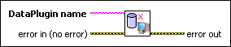

Unregister DataPlugin VI
Owning Palette: Manage DataPlugins VIs
Requires: Base Development System
Unregisters a DataPlugin from the local computer. This VI does not delete the corresponding DataPlugin .uri file or installer from the computer.
 | Note DataPlugins are shared between different National Instruments products and applications on the local computer. Registering or unregistering a DataPlugin might affect these products or applications. |

 Add to the block diagram Add to the block diagram |
 Find on the palette Find on the palette |